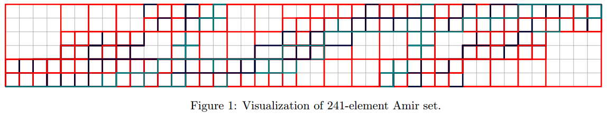

Tedszy's Notebook
-
SME training problems
Training problems for M1 and M2.
Check back here every week. New problems will be added.
Next is a collection of all the dimensional analysis
problems I did with M1, M2 and M3. Try to do whatever
you can do, you probably can’t do all of them if those
topics weren’t covered in your class. If you can’t do
a problem, move on to the next one. -
MATHSCI problems
MATHSCI Line group training problems.
Write up your solution, take a pic with your phone, send it to me.
4D hypercube (tesseract) worksheets. Use the one with two hypercubes
per sheet for numbering vertices and counting edges. Use the
one with 8 hypercubes per sheet for coloring 3D subcubes, and the one
with 24 per sheet for coloring 2D faces. -
Subsets and Cartesian Products
Computing subsets and Cartesian products are common
tasks you are faced with when trying to solve problems by computer
programming. And common advice you get is to do these things by
recursion or, in the case of Cartesian products, by Lisp macros.
But we don’t want to do them that way.1. Subsets
A typical Scheme formula for computing subsets uses recursion. But
suppose you are looking for something among the subsets of a large
set. What if you have billions of subsets and you want to iterate over
them one at a time? Well forget the usual recursive solutions. We are
going to use bit-hacking on integers.Every subset of a set can be represented by a binary code. For
example consider the set{A,B,C,D,E}. If we set0to
mean “don’t choose the element” and1to mean “choose the
element”, then the subset{A,C,E}can be represented
by the binary code10101:A B C D E 1`0 1 0 1 --------- A C EThis leads to a good idea! If we take any integer less than
2^5
and we extract the bits using arithmetic right shift, we can decode
which elements are chosen for the subset and which are rejected.
Looping through all such numbers gives us all possible subsets.(defun subsets (myset) (loop for k from 0 below (expt 2 (length myset)) collecting (loop for s in myset with subset = nil with bitfield = k do (when (= 1 (logand bitfield 1)) (push s subset)) (setf bitfield (ash bitfield -1)) finally (return subset))))We test if the last bit is 1 by doing bitwise-
andwith 1. Then we
right-shift to get the next bit, and so on. We know that there will
be2^nsubsets, so we know when to stop. This way of doing it
allows some easy modifications. For instance, if you don’t want the
empty set, just start iterating fromk=1instead ofk=0.What
could possibly be easier than this? No need for mind-bending
inefficient recursion. Illustration:> (subsets '(a b c d)) (NIL (A) (B) (B A) (C) (C A) (C B) (C B A) (D) (D A) (D B) (D B A) (D C) (D C A) (D C B) (D C B A))2. Cartesian Products
Suppose we have three lists of number
(2 3 5),(7 11 13)
and(17 19 23).We want to form all possible products obtained by
choosing one number from each list. No problem, you say, you’ll just
use nested loops, one loop for each list. But that works only if you
know you will have exactly three lists of numbers. What if you have
nlists of numbers? Then what? Recursion? I’ve seen it done that
way. Macros? Yes, incredible as it sounds, I’ve seen macros that
generatennested loops to do this job.But none of such things are necessary when there exists a perfectly
good functional programming idiom tailor-made for these kind of
jobs:reduce!(defun cartesian (list-of-lists) (reduce #'(lambda (u v) (loop for i in u nconc (loop for j in v collect (* i j)))) list-of-lists))The
lambdafunction takes two lists and does a Cartesian product,
concatenating all the results into one big list. Further Cartesian
products are accumulated into this list byreduceas it traverses
down thelist-of-lists.There, a simple functional way
of doing it. Illustration:>(cartesian '((2 3 5) (7 11 13) (17 19 23))) (238 266 322 374 418 506 442 494 598 357 399 483 561 627 759 663 741 897 595 665 805 935 1045 1265 1105 1235 1495)A example of an application for Cartesian product is to compute
all the divisors of a number when the prime factorization is known. -
Even and odd sized subsets and more
Consider a set of size
n. How many even-sized subsets
does it have, and how many odd-sized subsets does it have?
Another way to phrase this question is: how manyk-subsets
are there whenk=0 mod 2, and how many are there
whenk=1 mod 2?One way of computing this is to take the
nth row of
Pascal’s triangle and add up all the counts fork=0 mod 2
and then fork=1 mod 2. I have written some functions
that do this in pascal.rkt. To use this module, you will also
need grid.rkt.-> (subset-count-congruence-table 2 7) n =0 =1 ----- ----- ----- 0 1 0 1 1 1 2 2 2 3 4 4 4 8 8 5 16 16 6 32 32So, a set of 6 elements has 32 odd-sized subsets and
32 even-sized subsets. Let’s abstract away the numbers
and look at only the patterns.n =0 =1 ----- ----- ----- 0 1 0 1 = = 2 = = 3 = = 4 = = 5 = = 6 = =For
n > 0the pattern repeats itself with a period of 1. There
are always as many even-sized subsets as odd-sized. Since
the total number of subsets is2^n, it must be that there
are2^(n-1)odd-sized (or even-sized) subsets.And now we see why rephrasing the question in terms of modular
arithmetic is productive. It is immediately natural to ask: what
about other moduli? What about the number of subsets with size
divisible by three? And so on. The code in pascal.rkt handles
any modulus. Let’s try mod 3.-> (subset-count-congruence-table 3 13) n =0 =1 =2 ----- ----- ----- ----- 0 1 0 0 1 1 1 0 2 1 2 1 3 2 3 3 4 5 5 6 5 11 10 11 6 22 21 21 7 43 43 42 8 85 86 85 9 170 171 171 10 341 341 342 11 683 682 683 12 1366 1365 1365Let’s abstract away the numbers and keep the patterns.
There are always two entries that are equal. The third
is either greater by 1 or less by 1.n =0 =1 =2 ----- ----- ----- ----- 0 +1 = = 1 = = -1 2 = +1 = 3 -1 = = 4 = = +1 5 = -1 = 6 +1 = = 7 = = -1 8 = +1 = 9 -1 = = 10 = = +1 11 = -1 = 12 +1 = =The pattern repeats itself after 6 rows. The period is 6.
What about other moduli, such as mod 4 or mod 5?
The code module pascal.rkt saves us the pain of
computing the necessary tables. Here is a table for mod 4.-> (subset-count-congruence-table 4 11) n =0 =1 =2 =3 ----- ----- ----- ----- ----- 0 1 0 0 0 1 1 1 0 0 2 1 2 1 0 3 1 3 3 1 4 2 4 6 4 5 6 6 10 10 6 16 12 16 20 7 36 28 28 36 8 72 64 56 64 9 136 136 120 120 10 256 272 256 240Clearly there is a pattern here, but it’s more complicated.
Does the pattern (whatever it may be) repeat itself? What is
the period for mod 4? What about mod 5, etc? There is plenty
of opportunity for you to do some interesting research here!
Use pascal.rkt and grid.rkt and be creative! -
Inside-Out: mutual recursion vs. function application
Recursion can be imagined as repeated function applications
turned inside-out. How about mutual recursion? That’s a
notoriously difficult idea to visualize, but even that can be
understood the same way. Except that we must use functions
which return multiple values. That’s the key.I go through many examples of this analogy: multiplication of
complex numbers, Pauli matrices, Fibonacci-like sequences.
If you have problems understanding mutual recursion (like
everyone does) then you can work through these examples.The article is here:
It is a rough draft, so there are probably many typos and
incoherencies. But the material and the ideas are there.The code is here:
-
Bellman-Ford solver
The Bellman-Ford algorithm finds the minimum (or maximum) cost paths through a graph. Simple Problem Solving Tools has an implementation of the Bellman-Ford algorithm. Let’s demonstrate it a problem from from cmu.edu. The task is to find the path with the least cost that goes from node
0to node9.
The Bellman-Ford algorithm actually finds the minimum cost path from some source node (in this case node
0) to all other nodes. By adding the key argument:show-steps twe can make the Bellman-Ford solver output tables of all the intermediate steps, i.e., the distance table and the predecessor table.First we use Quicklisp to load The Simple Problem Solving Tools. Clone the spst repo into
quicklisp/local-projectsand then:> (ql:quickload :spst) > (in-package :spst)Now, write a list of nodes and another list of weighted edges corresponding to the edges in the graph. Use these lists to create a graph object. The paths of interest start at
0. That will be the source node.SPST> (defparameter nodes-cmu '(0 1 2 3 4 6 8 9 12 15)) SPST> (defparameter edges-cmu '((0 8 1) (1 3 12) (1 6 2) (2 1 22) (2 8 8) (2 15 6) (3 2 4) (4 1 3) (6 3 18) (8 3 7) (9 0 11) (9 12 5) (12 9 14) (12 2 16) (15 12 3) (15 1 9) (15 4 5))) SPST> (defparameter g-cmu (make-graph-with-weighted-edges nodes-cmu edges-cmu))We can now get the distance and predecessor tables. This is a good way to check if you have been doing it right, and a good way for someone like me to make up more such hand-calculation graph problems for you to do.
SPST> (bellman-ford g-cmu 0 :show-steps t) distance table: 0 1 2 3 4 6 8 9 12 15 0 NIL NIL 8 NIL NIL 1 NIL NIL NIL 0 NIL 12 8 NIL NIL 1 NIL NIL NIL 0 27 12 8 23 NIL 1 NIL 21 18 0 26 12 8 23 29 1 35 21 18 0 26 12 8 23 28 1 35 21 18 predecessor table: 0 1 2 3 4 6 8 9 12 15 NIL NIL NIL 8 NIL NIL 0 NIL NIL NIL NIL NIL 3 8 NIL NIL 0 NIL NIL NIL NIL 15 3 8 15 NIL 0 NIL 15 2 NIL 4 3 8 15 1 0 12 15 2 NIL 4 3 8 15 1 0 12 15 2That’s nice but what if we want to get the actual path from node
0to node9? The functionoptimal-pathdecodes this from the information in the hash-table returned bybellman-ford:SPST> (optimal-path 9 (bellman-ford g-cmu 0)) (0 8 3 2 15 12 9)And there we have it. The cost of the best route from
0to9is 35, and the route itself goes like so:0 -> 8 -> 3 -> 2 -> 15 -> 12 -> 9.The Bellman-Ford code is here: graphs.lisp
-
Searching the Tree of Pythagorean Tuples
A primitive pythagorean tuple is a tuple of three integers
(a,b,c)such that(a,b) = (b,c) = (c,a) = 1,a^2 + b^2 = c^2, andbis even.Starting with the first primitive tuple, (3,4,5), all others can be generated by applying the Barning matrices
A,B, andC:A = [1 -2 2 B = [1 2 2 C = [-1 2 2 2 -1 2 2 1 2 -2 1 2 2 -2 3] 2 2 3] -2 2 3]This process generates a ternary tree beginning at the root tuple
(3,4,5). For example,(A^4)(B^3)(ABC)^2 * (3,4,5) = (10764945, 55503968, 56538257)which is in fact a primitive Pythagorean tuple, one of the nodes in the tree. Let’s try this using the Simple Problem Solving Tools package.
> (in-package :spst) SPST> (follow-path '(A A A A B B B A B C A B C)) (32033617, 14757744, 35269585 => (A A A A B B B A B C A B C))But we could ask the question the other way around. Given a Pythagorean tuple, what is the path that we must take through the tree in order to arrive at it?
SPST> (depth-search-pytree :search-for #'(lambda (pt) (with-slots (a b c) pt (and (= a 32033617) (= b 14757744) (= c 35269585)))) :limit (lambda (pt) (with-slots (a b c) pt (<= c 36000000))) :with-path t) ((32033617, 14757744, 35269585 => (A A A A B B B A B C A B C))) 5729606The procedute also returned the number of tuples searched: 5,729,606 of them. We can also search without compiling path information, saving lots of memory. Consider the following problem. Suppose
(a,b,c)is a primitive Pythagorean tuple. Is there a larger primitive tuple(e,f,g)that is elementwise divisible by(a,b,c)? In other words, does there exist tuples(e,f,g)such thata|e, b|g, c|g? Let’s find out. Consider(a,b,c) = (115, 252, 277). We will search up to a limit ofc <= 10,000,000, but we will not calculate path information this time.SPST> (depth-search-pytree :search-for #'(lambda (pt) (with-slots (a b c) pt (and (= 0 (mod a 115)) (= 0 (mod b 252)) (= 0 (mod c 277))))) :limit #'(lambda (pt) (with-slots (a b c) pt (<= c 10000000))) :with-path nil) ((5253545, 7823592, 9423817) (6998095, 4000752, 8060977) (7607825, 2664648, 8060977) (9352375, 1158192, 9423817) (115, 252, 277)) 1591579After searching almost 1.6 million of them, we found some tuples that meet the criteria! I’m sure you can think of many more such interesting ways to query the tree of Pythagorean tuples. If you want to see the code that does all this, it’s right here:
-
Rational Geometry with Racket
Points and lines can take you a long way
in geometry. Here is all the material covered in the
Racket geometry topic, plus more. There are many more
problems and studies (mostly projective type stuff) and
the code makes use of some Racket features you might not
have seen before (match-let).The article includes all the code that you need too.
All you have to do is install Racket and follow along. -
The Amir Problem
The Amir problem was proposed to me a long time ago by an
engineering student named Amir. Suppose you have a lottery based
on drawing 6 numbers from a set of 49 numbers. How many such
combinations do you need in order to guarantee that the outcome
will always score at least 3 numbers out of the winning draw of 6?Here is a brute-force solution. Generate all 13,983,816
combinations of 6 objects chosen from a set of 49. Go through
them one at time. Add a combination to the solution set if it
does not have more that two objects in common with any other
combination in the solution set. If you do this you’re likely
to get a solution set with about 450 combinations.The interesting thing about this problem is that the size of
the solution set (we can call it the Amir set) depends on the
order in which you examine and add the combinations. If you
shuffle the vector of 13.9 million combinations and then build
an Amir set, you can get, say, 400 elements or 550 elements for
example. What is the smallest possible Amir set? What is the
largest possible Amir set? I don’t know yet.For a long time, the smallest Amir set I found was around 360
combinations. But recently, by means of a new trick, I happend
to find one that is only 241 combinations. How low can it go?To do experiments with Amir sets, we need some fast code,
so this calls for C++. Combinations are represented by
the first 49 bits of 64-bit integers with popcount 6. They
are compared using Kernighan’s popcount algorithm, which for
this particular application is the fastest way I have yet found.
The original Amir program was written in Matlab and it took
something like ten days (!) to finish on an old Intel Pentium.
But today, with C++ and bit-hacking, a typical Amir set can be
computed on average hardware in about 1 second.You can play with the order in which the combinations are
evaluated, and with the way that the Amir set is seeded.
Try to find an Amir set smaller than 241 elements. Let me
know if you do.The Amir project has some Common Lisp code for generating a
latex/tikz graphic representing an Amir set. Each element of
an Amir set is a popcount 6 number in a 49-bit field, so each
one can be represented as a path through a lattice: 1 is up
and 0 is to the right. Below is the visualization of the 241
element Amir set. -
What are Quaternions?
A concise definition goes like this: a quaternion
qis a linear combinationq = w + xi + yj + zkwhere
ij = k,jk = i,ki = jandijk = -1. But perhaps this doesn’t give us much of a feeling about what quaternions are supposed to be. Is there a way of understanding them without resorting to the imaginariesi, j, k? In fact Hamilton himself preferred to avoidi, j, kas much as possibe when talking about quaternions. This article presents a particular way of introducing the quaternion idea withouti, j, k.Thinking about Quaternions (pdf)
The article also addresses the peculiar question: can you add a number to a vector, and if so, what do you get?
-
Generalized Euclidean Algorithm
With the Euclidean algorithm, you can compute GCDs and
continued fractions. But with the generalized Euclidean
algorithm you can also change radix and compute integer
square roots, among other things. Watch how this is done.
This module includes the Fermat factorization code I used
to design test questions and class problems. Now you can
use it too. -
Polygonal numbers
Can a number be both square and triangular? It turns out that this
is a very interesting question with lots of depth. Here is a nice
introduction for you: -
Making numbers with lambda
The lambda idea is powerful. It can even be used
to define fundamental things like integers. I know
what you are thinking: this must be a horribly
inefficient way of working with integers. Yes, it is,
compared to native integer operations supported by the
CPU. But the same lambda-techniques can be applied to
abstractions that are not supported directly by the CPU.
Suddenly lambdas become a competitive way to model, say,
group elements or objects in geometry.Whatever the case, Church numerals are a great
example of the power that lambdas have for expressing
abstract ideas. Here is a simple implementation of
Church numeras, inspired by SICP exercise 2.6. -
Ramanujan taxi-cab numbers
Hardy’s famous story about Ramanujan goes:
“I remember once going to see him when he was ill at Putney.
I had ridden in taxi cab number 1729 and remarked that the
number seemed to me rather a dull one, and that I hoped it
was not an unfavorable omen. “No,” he replied, “it is a very
interesting number; it is the smallest number expressible as
the sum of two cubes in two different ways.”How did Ramanujan know this? Was he right? In this little project
we use Racket to examine 1729 and look for other numbers with
similar properties: ramanujan-taxi-cab.rkt -
Sums and products mod m
Two numbers cannot have both an odd sum and an odd product.
This simple fact of arithmetic has some interesting generalizations.
We examine some of them in this Racket exercise: mod-prod-sum.rkt.